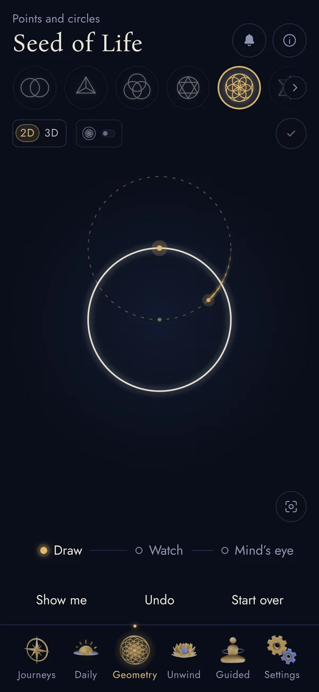
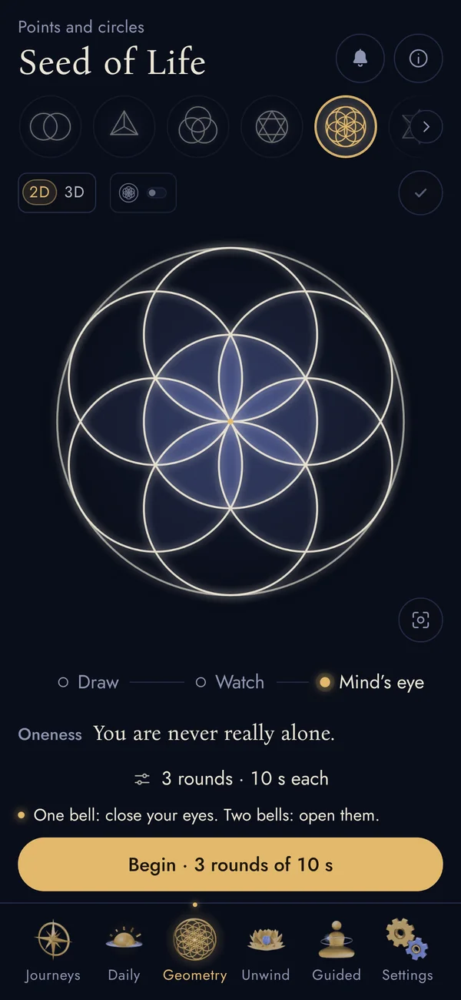
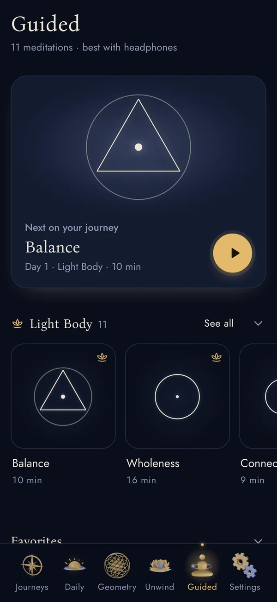
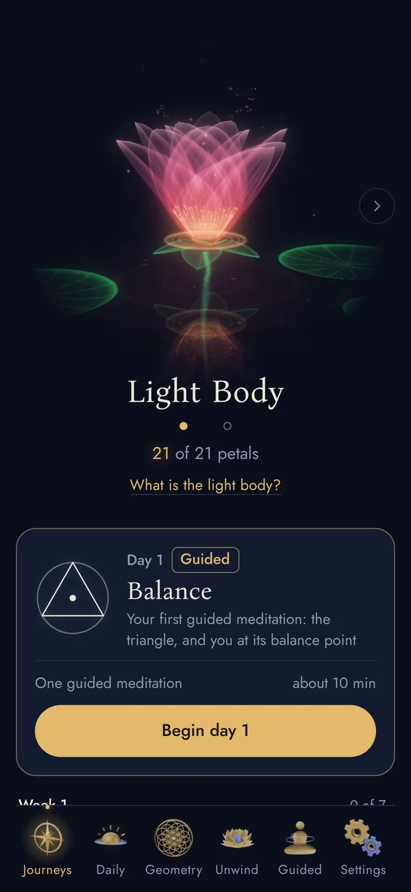
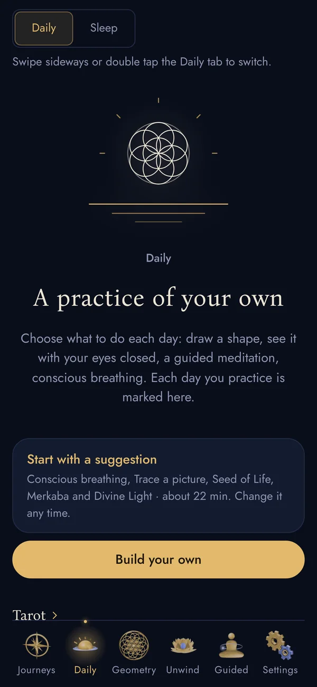
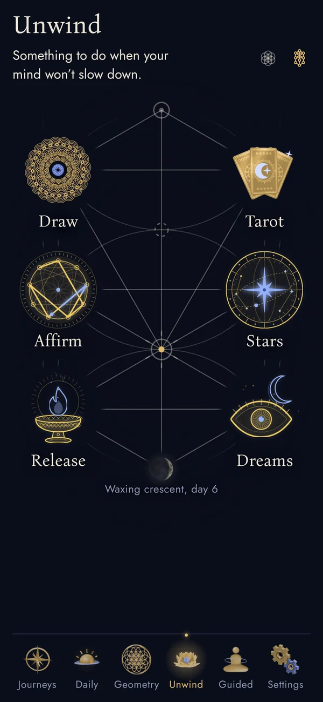
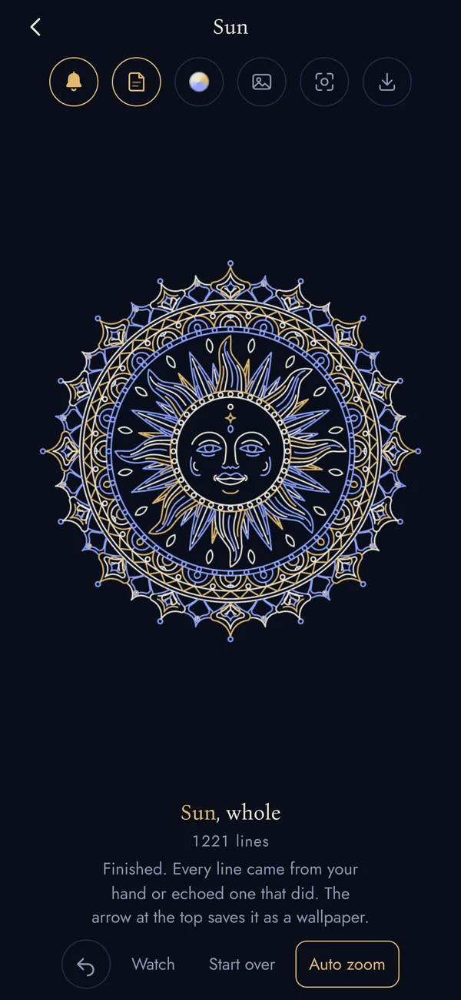

Draw. Visualize. Embody.
Connect with your inner world, one shape at a time.
Sacrera teaches you to draw the forms of sacred geometry, hold them in your mind’s eye, and bring them into guided meditation.
Tap the gold point. That is where the compass goes, and the next circle follows.
Step 1 of 8
How it works
Three steps with every shape, from the Vesica Piscis to Metatron’s Cube.
-

Draw
Trace each form the way it was always made, one circle at a time, with the compass point showing where the next one starts.
-

Visualize
Close your eyes and find the shape again. One bell to close them, two bells to open them, a few rounds at a time.
-

Embody
Carry the shape into a guided meditation, into your heart and your body, with a calm voice leading the way. Two voices to choose from.

The first journey
21 days for your light body
Every person has a light body. This journey helps you become aware of yours, and trains you to hold a living form in your mind’s eye. Each day you complete opens a petal of the lotus. On day 21 it blooms, and it is yours to keep as a living wallpaper.
- Guided days
- A meditation of about ten minutes, built around one shape.
- Visualization days
- Draw, watch, then see the form with your eyes closed.
- Merkaba
- Where the journey leads. It prepares you by training you to hold the Merkaba in your mind’s eye.
Also inside
A practice that fits your day



Paper mode
Draw it on paper too
Every shape has a printable sheet: the compass settings, each step in order, and about how long it takes. A compass and a sharp pencil are all you need.